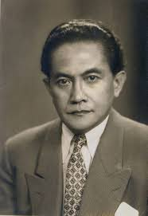
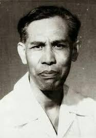

1. Prof. Mr. Soenari Sastrowardoyo
Prof. Mr. Soenari Sastrowardoyo dalam Sumpah Pemuda berperan sebagai penasehat panitia. Tugasnya adalah merumuskan butir-butir dalam Sumpah Pemuda, seperti kita kenal saat ini. Tanpa beliau mungkin tidak akan pernah ada pengakuan tentang bertumpah darah, berbangsa dan berbahasa satu, Indonesia.
2. J. Leimena
Tokoh Sumpah Pemuda yang tidak kalah penting peranannya adalah J. Leimena. Beliau merupakan salah satu tokoh dari Kongres Pemuda II yang menjadi tonggak awal Sumpah Pemuda. Leimena merupakan pemuda kelahiran tahun 1905. J. Leimena adalah seorang aktivis mahasiswa sekaligus ketua organisasi pemuda bernama Jong Ambon.
3. Soegondo Djojopoespito

Sejarah Sumpah Pemuda mungkin tidak akan pernah ada kalau tidak ada peranan dari Soegondo Djojopoespito. Tanpa banyak yang mengetahui, ternyata beliau adalah tokoh dibalik Kongres Pemuda II. Beliau inilah yang memimpin kongres tersebut sehingga menghasilkan ikrar Sumpah Pemuda.
4. Djoko Marsaid

Djoko Marsaid merupakan wakil ketua dalam Kongres Pemuda II 1928. Beliau sekaligus menjadi ketua dari organisasi pemuda Jong Java. Djoko Marsaid pada saat itu juga sebagai seorang aktivis pergerakan pemuda.
5. Muh. Yamin

Nama tokoh yang satu ini cukup dikenal dibandingkan yang lainnya. Ya, siapapun pasti mengenal nama Muhammad Yamin. Tokoh pahlawan ini lahir di Minangkabau (Sumatera Barat) pada tahun 1903 dan dikenal sebagai seorang penyair puisi bergaya modern saat itu. Muh. Yamin adalah tokoh yang mendorong diakuinya bahasa Indonesia sebagai bahasa persatuan melalui ikrar Sumpah Pemuda.
6. Amir Syarifuddin Harahap

Sebutkan satu tokoh dalam Sumpah Pemuda, kamu bisa menjawab dengan Amir Syarifuddin. Beliau ini adalah ketua dari Jong Batak Bond sekaligus juga seorang aktivis yang anti Jepang. Begitu bencinya dengan Jepang, membuatnya pernah mendapatkan ancaman hukuman mati. Namun hal tersebut tidak menyurutkan semangatnya untuk mempersatukan Indonesia. Bahkan beliau inilah yang sering memberikan ide-ide brilian dalam Sumpah Pemuda.